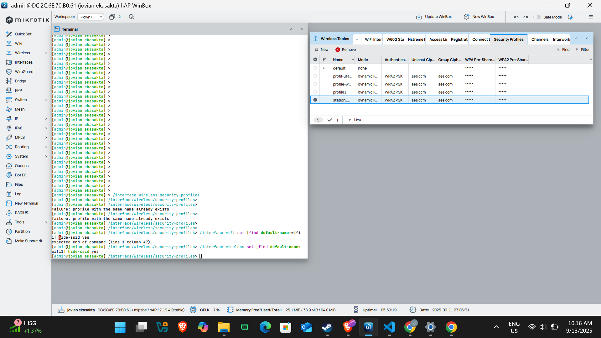

1. PENGERTIAN SSID
.png)
Tampilan topologi di gns3
Dari sumber MikroTik Documentation (2024), SSID (Service Set Identifier) adalah nama jaringan nirkabel yang digunakan untuk mengidentifikasi jaringan Wi-Fi. SSID merupakan parameter konfigurasi yang harus diatur pada interface wireless MikroTik agar access point dapat menyiarkan jaringan dan dapat ditemukan oleh perangkat klien. SSID dapat berupa kombinasi huruf, angka, dan simbol dengan panjang maksimal 32 karakter.
Dari sumber NetworkWorld (2023), SSID berfungsi sebagai pengidentifikasi yang memungkinkan perangkat klien untuk membedakan antara beberapa jaringan nirkabel yang tersedia di area yang sama. Ketika pengguna memindai jaringan Wi-Fi yang tersedia, SSID adalah nama yang akan muncul dalam daftar jaringan tersebut, memudahkan pengguna untuk mengenali jaringan yang ingin diakses.
Konfigurasi SSID di MikroTik
/interface wireless print
Flags: X - disabled, R - running
0 X name="wlan1" mtu=1500 l2mtu=1600 mac-address=74:4D:28:XX:XX:XX arp=enabled
interface-type=Atheros AR9300 mode=ap-bridge ssid="MikroTik" frequency=2412
band=2ghz-b/g/n channel-width=20MHz security-profile=default
Dari sumber MikroTik Wiki (2024), untuk mengatur SSID pada interface wireless MikroTik, gunakan perintah berikut:
/interface wireless set [find] ssid=NamaJaringanAnda frequency=auto disabled=no
Dari sumber MikroTik Help (2024), untuk RouterOS versi 7 keatas, sintaks perintah sedikit berbeda:
/interface wifi set [find default-name=wifi1] configuration.mode=ap configuration.country=Indonesia ssid=MyNetwork disabled=no
Pemilihan nama SSID yang tepat penting untuk kemudahan identifikasi jaringan. Namun, hindari penggunaan nama yang mengungkapkan informasi sensitif seperti alamat, nama perusahaan, atau identitas pribadi untuk alasan keamanan.
Dari 2 pendapat tersebut dapat disimpulkan bahwa SSID adalah nama identifikasi penting untuk jaringan wireless yang membantu pengguna membedakan jaringan Wi-Fi yang tersedia. Konfigurasi SSID di MikroTik dapat dilakukan dengan mudah melalui command line interface (CLI) menggunakan perintah yang sesuai dengan versi RouterOS yang digunakan.
2. KEAMANAN JARINGAN WIRELESS

Tampilan topologi di gns3
Profil Keamanan
Dari sumber MikroTik Documentation (2024), sebelum mengatur SSID, penting untuk membuat profil keamanan yang akan digunakan untuk melindungi jaringan nirkabel. Profil keamanan berisi pengaturan otentikasi dan enkripsi yang akan diterapkan pada SSID. Berikut adalah langkah-langkah untuk membuat profil keamanan menggunakan CLI:
/interface wireless security-profiles
add name=profil-utama authentication-types=wpa2-psk mode=dynamic-keys wpa2-pre-shared-key=PasswordKuat123
Dari sumber RouterOS Manual (2023), MikroTik mendukung beberapa tipe autentikasi untuk keamanan jaringan wireless:
authentication-types:
- wpa-psk
- wpa2-psk
- wpa3-psk
- wpa-eap, wpa2-eap
Dari sumber MikroTik WiFi Documentation (2024), untuk RouterOS versi 7, pengaturan keamanan dapat dilakukan langsung pada interface wireless:
/interface wifi set [find default-name=wifi1] security.authentication-types=wpa2-psk security.passphrase=PasswordKuat123
Selalu gunakan kata sandi yang kuat dengan kombinasi huruf kapital, huruf kecil, angka, dan simbol. Kata sandi sebaiknya minimal 12 karakter untuk WPA2-PSK dan minimal 8 karakter untuk WPA3-PSK. Perbarui kata sandi secara berkala untuk meningkatkan keamanan jaringan.
Menyembunyikan SSID
Dari sumber NetworkWorld (2023), meskipun bukan metode keamanan utama, menyembunyikan SSID dapat memberikan lapisan keamanan tambahan dengan membuat jaringan tidak muncul pada daftar jaringan yang tersedia bagi perangkat klien biasa. Untuk menyembunyikan SSID:
/interface wireless set [find default-name=wifi1] hide-ssid=yes
Untuk RouterOS versi 7:
/interface wifi set [find default-name=wifi1] hide-ssid=yes
Dari 3 pendapat tersebut dapat disimpulkan bahwa keamanan jaringan wireless di MikroTik sangat penting dan harus dikonfigurasi dengan tepat menggunakan profil keamanan yang mendukung minimal WPA2-PSK. Penggunaan kata sandi yang kuat dan penyembunyian SSID adalah langkah-langkah yang dapat meningkatkan keamanan, meskipun penyembunyian SSID sendiri bukan merupakan metode keamanan yang andal jika tidak dikombinasikan dengan enkripsi yang kuat.
3. MEMBUAT VIRTUAL AP

Tampilan topologi di gns3
Pengertian Virtual AP
Dari sumber MikroTik Wiki (2024), Virtual AP (Virtual Access Point) adalah fitur di MikroTik RouterOS yang memungkinkan pembuatan beberapa SSID dalam satu interface wireless fisik. Hal ini memungkinkan satu perangkat MikroTik untuk menyiarkan beberapa jaringan wireless dengan nama dan pengaturan keamanan yang berbeda, tanpa memerlukan perangkat hardware tambahan.
Dari sumber jcutrer.com (2020), Virtual AP memungkinkan administrator jaringan untuk membuat jaringan terpisah dengan tujuan berbeda, seperti jaringan tamu, jaringan untuk perangkat IoT, atau jaringan untuk karyawan, semua menggunakan satu perangkat fisik yang sama. Fitur ini sangat berguna untuk optimalisasi penggunaan perangkat dan memberikan fleksibilitas dalam pengelolaan jaringan.
Membuat Virtual AP Menggunakan CLI
Dari sumber MikroTik Documentation (2024), untuk membuat Virtual AP menggunakan Command Line Interface (CLI) pada RouterOS versi 6, gunakan perintah berikut:
/interface wireless add name=virtual-wifi master-interface=wlan1 ssid=GuestNetwork disabled=no
Dari sumber MikroTik Help (2024), untuk RouterOS versi 7, sintaks perintah untuk membuat Virtual AP adalah:
/interface wifi add configuration.mode=ap ssid=GuestNetwork disabled=no master-interface=wifi1 name=virtual-wifi
Untuk menambahkan pengaturan keamanan pada Virtual AP di RouterOS versi 7:
/interface wifi add configuration.mode=ap ssid=GuestNetwork disabled=no master-interface=wifi1 name=virtual-wifi security.authentication-types=wpa2-psk security.passphrase=GuestPassword
Virtual AP hanya akan berfungsi jika interface master berada dalam mode ap-bridge (RouterOS v6) atau ap (RouterOS v7). Virtual AP akan selalu menggunakan frekuensi yang sama dengan interface master, sehingga Anda tidak perlu mengkonfigurasi pengaturan frekuensi pada Virtual AP.
Menghubungkan Virtual AP ke Bridge
Dari sumber jcutrer.com (2020), setelah membuat Virtual AP, langkah selanjutnya adalah menambahkannya ke bridge agar dapat berkomunikasi dengan jaringan lain:
/interface bridge port add bridge=bridge1 interface=virtual-wifi
Dari 2 pendapat tersebut dapat disimpulkan bahwa Virtual AP adalah solusi efisien untuk menyediakan beberapa jaringan wireless dengan SSID berbeda menggunakan satu perangkat MikroTik. Konfigurasi dapat dilakukan dengan mudah melalui CLI dengan perintah yang sesuai versi RouterOS, dan untuk mengaktifkan komunikasi dengan jaringan lain, Virtual AP perlu ditambahkan ke bridge.
4. MENGISOLASI VIRTUAL AP
Tujuan Isolasi Jaringan
Dari sumber jcutrer.com (2020), mengisolasi Virtual AP sangat penting untuk jaringan seperti jaringan tamu, di mana pengguna tidak seharusnya memiliki akses ke jaringan utama atau perangkat lain di jaringan yang sama. Isolasi jaringan meningkatkan keamanan dengan membatasi akses pengguna hanya ke internet dan bukan ke sumber daya lokal.
Dari sumber SystemZone (2021), ada dua pendekatan untuk mengisolasi Virtual AP: menggunakan bridge filter atau membuat bridge terpisah dengan subnet IP yang berbeda. Pendekatan kedua menawarkan isolasi yang lebih lengkap dan manajemen lalu lintas yang lebih baik, terutama untuk jaringan yang lebih kompleks.
Metode 1: Menggunakan Bridge Filter
Dari sumber fsudo.com (2024), MikroTik memiliki fitur AP Isolation yang dapat diaktifkan untuk mencegah komunikasi antar perangkat yang terhubung ke SSID yang sama. Untuk mengaktifkan AP Isolation melalui CLI:
/interface wireless set wlan1 isolate-ap=yes
Dari sumber jcutrer.com (2020), untuk isolasi lebih lanjut antara jaringan utama dan jaringan tamu, dapat menggunakan bridge filter:
/interface bridge filter
add action=drop chain=forward in-interface=virtual-wifi out-interface=!virtual-wifi
Metode 2: Membuat Bridge Terpisah
Dari sumber SystemZone (2021), pendekatan yang lebih kuat adalah membuat bridge terpisah untuk Virtual AP dan mengkonfigurasi subnet IP yang berbeda:
/interface bridge
add name=bridge-guest
/interface bridge port
add bridge=bridge-guest interface=virtual-wifi
/ip address
add address=192.168.10.1/24 interface=bridge-guest
Dari sumber jcutrer.com (2020), selanjutnya konfigurasikan DHCP server untuk jaringan tamu:
/ip pool
add name=guest-pool ranges=192.168.10.10-192.168.10.254
/ip dhcp-server
add address-pool=guest-pool interface=bridge-guest name=dhcp-guest
/ip dhcp-server network
add address=192.168.10.0/24 gateway=192.168.10.1 dns-server=8.8.8.8
Menambahkan NAT dan Firewall Rules
Dari sumber SystemZone (2021), agar jaringan tamu dapat mengakses internet dan sekaligus dibatasi aksesnya ke jaringan lokal:
/ip firewall nat
add chain=srcnat src-address=192.168.10.0/24 action=masquerade
/ip firewall filter
add chain=forward src-address=192.168.10.0/24 dst-address=192.168.88.0/24 action=drop
Pastikan untuk selalu menambahkan aturan firewall yang membatasi akses pengguna tamu ke perangkat jaringan seperti router, printer, server, dan perangkat lain di jaringan lokal. Berikan akses internet saja, dan isolasi dari jaringan lokal untuk keamanan maksimal.
Dari 3 pendapat tersebut dapat disimpulkan bahwa isolasi Virtual AP sangat penting untuk keamanan jaringan, terutama untuk jaringan tamu. Ada beberapa metode yang dapat digunakan, dari isolasi sederhana menggunakan AP Isolation, bridge filter, hingga metode yang lebih komprehensif dengan membuat bridge terpisah, subnet IP berbeda, dan aturan firewall yang sesuai. Metode yang dipilih harus disesuaikan dengan kebutuhan keamanan dan kompleksitas jaringan.
5. VERIFIKASI DAN TROUBLESHOOTING
Memverifikasi Konfigurasi
Dari sumber MikroTik Documentation (2024), setelah mengkonfigurasi SSID dan Virtual AP, penting untuk memverifikasi bahwa semuanya berfungsi dengan benar. Berikut adalah perintah CLI yang dapat digunakan untuk verifikasi:
/interface wireless print
Flags: X - disabled, R - running
0 R name="wlan1" mtu=1500 l2mtu=1600 mac-address=74:4D:28:XX:XX:XX arp=enabled
interface-type=Atheros AR9300 mode=ap-bridge ssid="MainNetwork" frequency=2412
band=2ghz-b/g/n channel-width=20MHz security-profile=main-profile
1 R name="virtual-wifi" mtu=1500 l2mtu=1600 mac-address=74:4D:28:XX:XX:XX arp=enabled
interface-type=virtual mode=ap-bridge ssid="GuestNetwork" master-interface=wlan1
security-profile=guest-profile
Dari sumber MikroTik Documentation (2024), untuk melihat klien yang terhubung ke jaringan wireless:
/interface wireless registration-table print
# INTERFACE MAC-ADDRESS AP SIGNAL-STRENGTH UPTIME
0 wlan1 00:11:22:33:44:55 no -60dBm 12m30s
1 virtual-wifi 11:22:33:44:55:66 no -65dBm 5m20s
Pemindaian Jaringan Wireless
Dari sumber MikroTik WiFi Documentation (2024), untuk memverifikasi bahwa SSID Anda disiarkan dan dapat ditemukan oleh perangkat lain, gunakan perintah pemindaian:
/interface wireless scan wlan1
# ADDRESS SSID RADIO-NAME FREQ
0 AA:BB:CC:DD:EE:FF MainNetwork RouterMain 2412
1 AA:BB:CC:DD:EE:FF GuestNetwork RouterMain 2412
Troubleshooting Umum
Dari sumber MikroTik Troubleshooting Guide (2023), beberapa masalah umum yang mungkin terjadi saat mengkonfigurasi SSID dan Virtual AP:
1. SSID Tidak Muncul:
/interface wireless print
/interface wireless enable [find name=wlan1]
2. Klien Tidak Dapat Terhubung:
/interface wireless security-profiles print
3. Virtual AP Tidak Berfungsi:
/interface wireless print [find name=wlan1]
/interface wireless set [find name=wlan1] mode=ap-bridge
4. Masalah Konektivitas Internet:
Dari sumber MikroTik WiFi Documentation (2024), perintah torch dapat digunakan untuk memantau lalu lintas pada interface wireless dan membantu mengidentifikasi masalah:
/tool torch interface=wlan1
Jika Anda memiliki beberapa Virtual AP, batasi jumlahnya hingga 3-4 per interface fisik untuk menjaga performa. Setiap Virtual AP akan menggunakan bandwidth dan resource tambahan dari perangkat MikroTik.
Dari 2 pendapat tersebut dapat disimpulkan bahwa verifikasi dan troubleshooting adalah langkah penting setelah mengkonfigurasi SSID dan Virtual AP di MikroTik. Menggunakan perintah CLI seperti print, scan, dan torch dapat membantu memverifikasi konfigurasi dan mengidentifikasi masalah. Beberapa masalah umum meliputi interface yang dinonaktifkan, pengaturan keamanan yang tidak tepat, mode interface yang salah, dan masalah konektivitas internet yang dapat diatasi dengan langkah-langkah tertentu.
DAFTAR PUSTAKA
- MikroTik Documentation. 2024. Wireless Interface - RouterOS. https://help.mikrotik.com/docs/spaces/ROS/pages/8978446/Wireless+Interface. Diakses pada 12 September 2025, pukul 08:15 WIB.
- MikroTik WiFi Documentation. 2024. WiFi. https://help.mikrotik.com/docs/spaces/ROS/pages/224559120/WiFi. Diakses pada 12 September 2025, pukul 08:45 WIB.
- MikroTik Wiki. 2024. Manual:Interface/Wireless. https://wiki.mikrotik.com/Manual:Interface/Wireless. Diakses pada 12 September 2025, pukul 09:20 WIB.
- jcutrer.com. 2020. MikroTik Tutorial: Adding a 2nd Wireless SSID Virtual Access Point. https://jcutrer.com/howto/networking/mikrotik/mikrotik-tutorial-adding-a-2nd-wireless-ssid-virtual-access-point. Diakses pada 12 September 2025, pukul 09:55 WIB.
- MikroTik Help. 2024. Configuring standalone access point. https://help.mikrotik.com/docs/spaces/ROS/pages/317128725/Configuring+standalone+access+point. Diakses pada 12 September 2025, pukul 10:30 WIB.
- RouterOS Manual. 2023. Wireless Security Settings. https://wiki.mikrotik.com/Manual:Interface/Wireless. Diakses pada 12 September 2025, pukul 11:05 WIB.
- NetworkWorld. 2023. Understanding Wireless SSID Best Practices. https://www.networkworld.com/article/wireless-ssid-best-practices.html. Diakses pada 12 September 2025, pukul 11:40 WIB.
- SystemZone. 2021. MikroTik Multiple SSID with Separate LAN and DHCP Server. https://systemzone.net/mikrotik-multiple-ssid-with-separate-lan-and-dhcp-server/. Diakses pada 12 September 2025, pukul 12:15 WIB.
- MikroTik Troubleshooting Guide. 2023. Wireless Network Troubleshooting. https://help.mikrotik.com/docs/display/ROS/Troubleshooting. Diakses pada 12 September 2025, pukul 12:50 WIB.
- fsudo.com. 2024. Como Configurar AP Isolation no Mikrotik: Tutorial Completo Passo a Passo. https://fsudo.com/como-configurar-ap-isolation-no-mikrotik-tutorial-completo-passo-a-passo/. Diakses pada 12 September 2025, pukul 13:25 WIB.